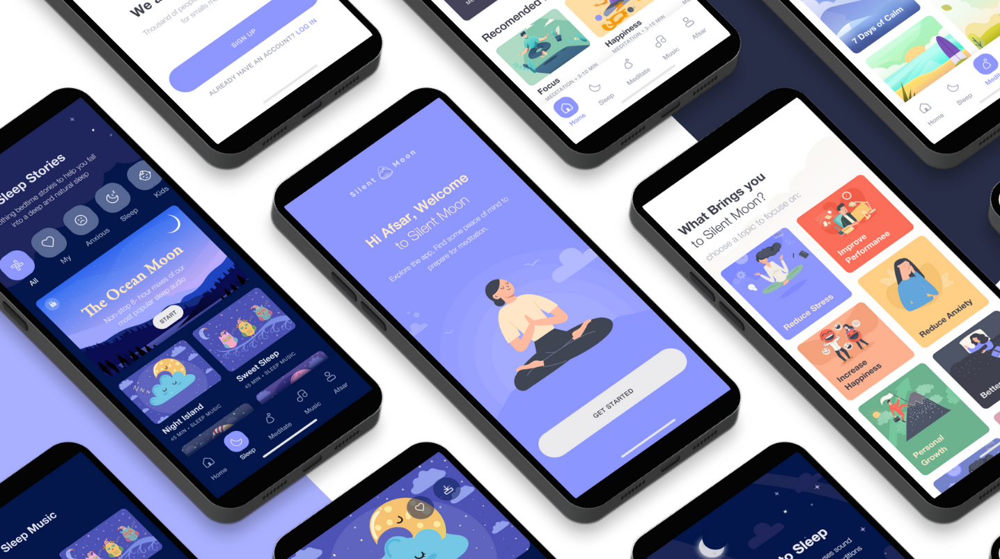
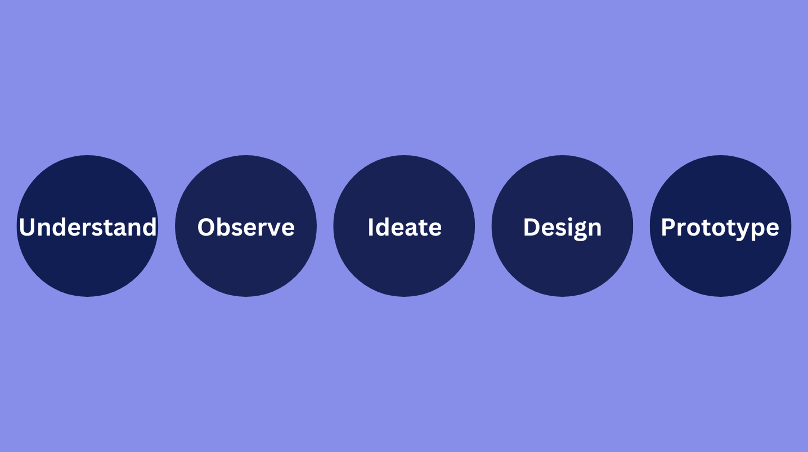
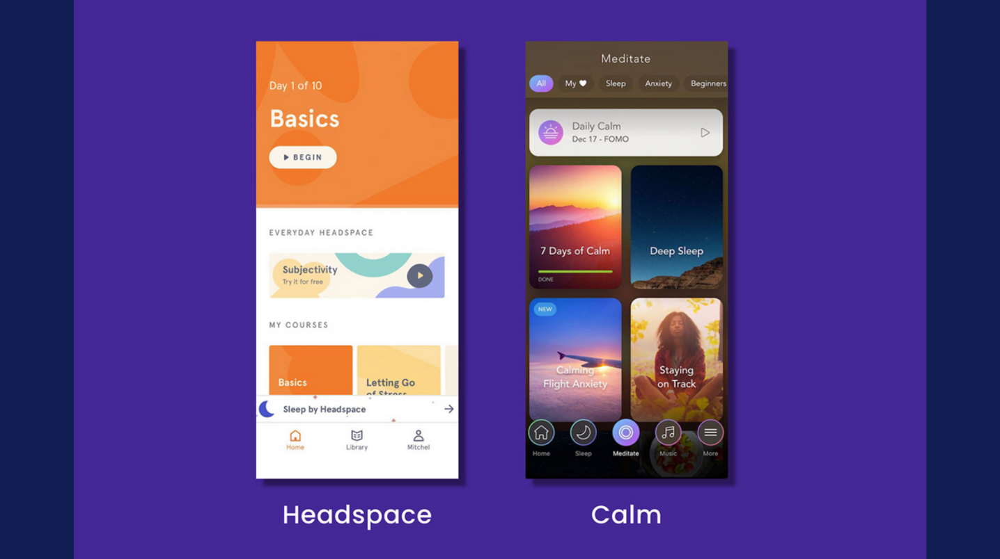
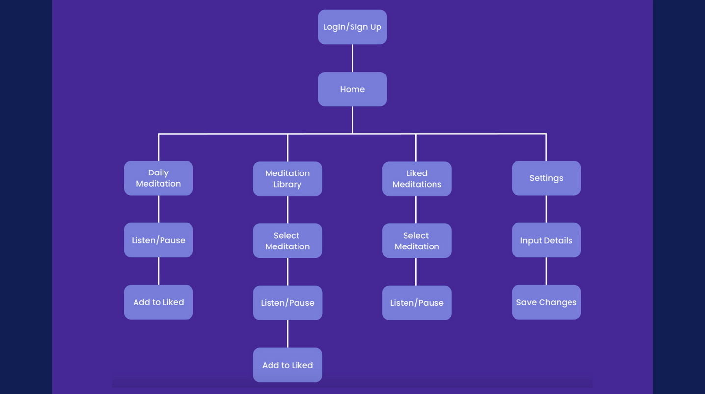
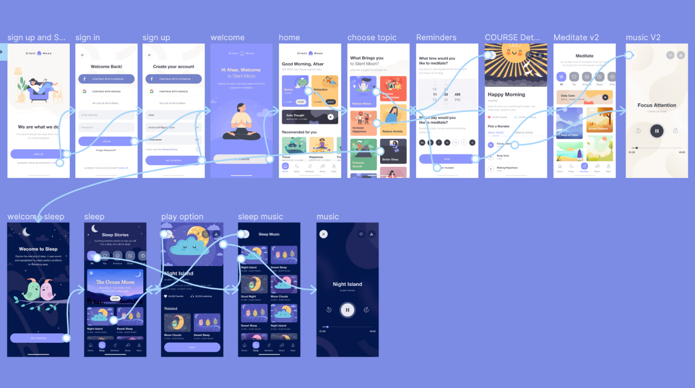

Objective
The objective is to create a meditation app that offers a free library of audio clips to Android and iPhone users. The app should cater to users who are looking for a cost-effective way to practice meditation and mindfulness. Both versions of the app should adhere to the distinct brand style guidelines to provide a consistent user experience. The goal is to create an app that is user-friendly, visually appealing, and provides a valuable service to users seeking to improve their mental and emotional well-being.

Design Process

Purpose & Context
The project aimed to develop UI/UX design skills through the creation of an app for both iOS and Android platforms. The app focused on meditation and self-care by providing a free library of meditation audio clips to help users develop a regular meditation practice. The goal was to create a user-friendly and visually appealing app that offered a valuable service to those seeking to improve their mental and emotional well-being.
1. Research Mobile Platforms
To create a successful design for both iOS and Android platforms, I researched their respective design guidelines, including Android's Material Design Guidelines and Apple's Human Interface Guidelines. This research helped me understand the specific typefaces, icons, color palettes, and UI elements used by each operating system to provide a familiar and consistent user experience. With this knowledge, I was able to consider the necessary design differences for the two versions of the SilentMoon app.
2. Competitor Analysis
To inform the development of my meditation app, I conducted a competitive analysis of the most popular meditation apps for both iOS and Android devices, including Headspace and Calm. I evaluated their features, user interface, and content offerings, as well as identifying any gaps in the market that my app could address. While both Headspace and Calm offered extensive libraries of meditations and additional features like fitness and music, most of their content was only accessible with a paid subscription. The free content offered by these apps was very limited, highlighting the need for a free library of meditations that my app aimed to provide.

3. User Flow Diagram
To plan out the app's design, I created a user flow diagram. This helped me map out the necessary screens and how users would navigate between them. The diagram served as a blueprint for the features that would be available within the app and provided an estimate of how many screens I would need to design.

4. Mid-Fidelity Wireframes
I created mid-fidelity wireframes using Figma for my app, with distinct iOS requirements in mind. I used UI toolkits for iOS to incorporate device-specific elements such as keyboards, typefaces, and buttons. The app's functionality would be consistent across both platforms, with the only difference being the display of elements on varying screen sizes.
5. High-Fidelity Wireframes
6. Prototype
To create a user-friendly and visually appealing app, I used Figma to create high-fidelity wireframes and an interactive prototype. Inspired by Headspace and Calm, I opted for a minimalist design with natural imagery to provide users with a stress-free and intuitive interface. After experimenting with various visual styles, I chose a simple yet calming color palette, the sans serif font Poppins, and vector graphic versions of natural landscapes for the app's imagery. I used Adobe Illustrator and Adobe Photoshop to edit the images and created working prototypes for both versions of the app in Figma.

7. User Testing
To test the effectiveness of my designs, I recruited a small group of participants to provide feedback on the prototypes. I ensured that each participant had experience with the operating system they were testing, so they could comment on the familiarity of the design. Participants were asked to explore the app and provide feedback on the navigation, layout, and visual design. I received mostly positive feedback, with many participants expressing appreciation for the calming imagery and color scheme.
9. Modification
While the user testing feedback was mostly positive, there were a few areas that needed improvement. The biggest issue was the lack of a logo for the app, with the name only mentioned in notifications. Based on user feedback, I decided to change the name from Care to SilentMoon. I then designed several possible logos in Adobe Illustrator, all with a nature theme to match the app's imagery. After some consideration, I chose a simpler logo with transparent letters on the second row to create a reflection effect, reminiscent of how water reflects its surroundings.
Reflection
From the start of this project, my goal was to create a meditation app that was intuitive and available to both Android and iOS users. I'm proud to say that both versions of the app have achieved these objectives, providing users with a sense of familiarity, ease of navigation, and aesthetically pleasing design.
Challenge
Choosing a suitable visual style for the SilentMoon app was my greatest obstacle during the project. Despite testing various styles, none of them seemed to perfectly align with the app's content or the desired environment I aimed to establish for users. While an abstract art design seemed promising, I ultimately decided on incorporating imagery of mountains, lakes, and night skies, as it felt more relevant to the app's purpose.